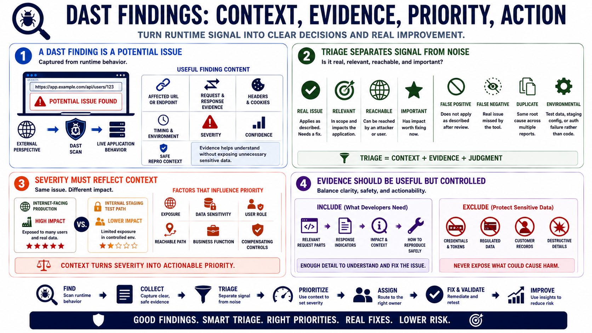

Findings, Triage, and Evidence
Connecting to LMS... Progress: in progress

Narration
A DAST finding is a potential issue identified from runtime behavior that requires review, context, and disposition. Useful findings include the affected URL or endpoint, request and response evidence, relevant headers or cookies, timing and environment details, severity, confidence, and safe reproduction context. Evidence helps developers and owners understand what happened without exposing unnecessary sensitive data.
Triage asks whether the finding is real, relevant, reachable, and important. False positives are reports that do not apply as described after review. False negatives are real issues missed by the tool. Duplicate findings may share a single root cause. Environmental issues may reflect test data, staging configuration, or scanner authentication failure rather than product code. Triage separates signal from noise.
Severity should reflect context. An exposed error on an internal staging-only path may differ from the same behavior on an internet-facing production endpoint. A session issue in an administrative workflow may carry higher impact than one in a low-risk test page. Exposure, data sensitivity, user role, reachable path, business function, and compensating controls all influence prioritization.
Evidence should be useful but controlled. Reports should not publish credentials, tokens, regulated data, customer records, or destructive request details. Developers need enough information to understand and fix the issue, while the organization still protects sensitive data. Good DAST reporting balances clarity, safety, and actionability.